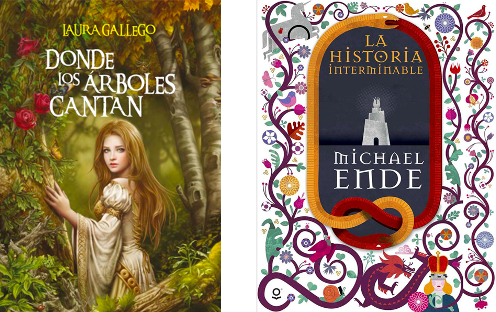

Hola, soy Montse
y te contaré más sobre mí
Me considero una persona resiliente, disciplinada y responsable, tanto en la vida académica y profesional como en la vida personal
Mis hobbies
GUITARRA, CANTO Y ESCRIBIR
Algo que me ayuda mucho es tocar la guitarra y cantar, de no ser porque me gustaban más las matemáticas y la geológia hubiera estudiado para ser compositora. He tomado clases desde hace ya ocho años.
En cuanto a la escritura he participado en varios concursos de escritos novelarios, así como de cuentos cortos sobre ciencia ficción y misterio
Mis gustos
MIS GUSTOS POR EL CINE Y LA CULTURA JAPÓNESA
El cine es una de mis pasiones ya que como séptimo arte es todo un mundo que explorar, tanto de géneros como de interdisciplinas, para mi carrrera me gustaría estudiar más a fondo el cine documental
La cultura japonesa me gusta tanto ya que envuelve en sí tradiciones que envuelven lecciones de vida a cada momento.
Siendo así que estos dos gustos se reflejan en el anime y en películas de los Studios Ghibli, que son de mis favorias
MIS GUSTOS POR LA LECTURA
Mis libros favoritos son La historia Interminable y Donde los arboles cantan
